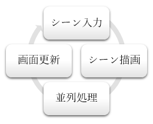
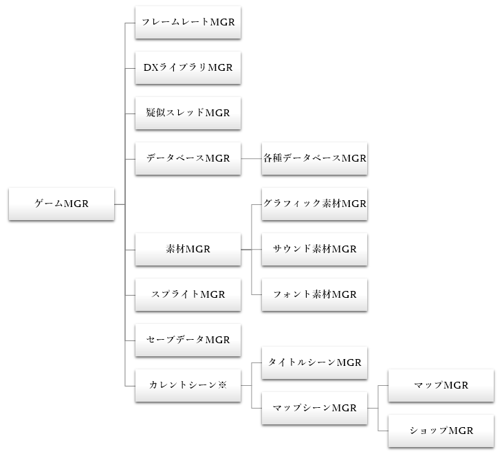

ゲームプログラムの根幹をなすシステムについて解説します。
スクリプトの組み込みオブジェクトはこの領域と連携しながら操作するものなので、スクリプトのコーディングを行う場合は一定の理解が求められます。
なお、全体的な構造としてオブジェクト指向的な特徴は少なく、実質的には分類分け程度に留まっています。
基本概念
大まかな処理の流れ

本ソフトはシングルスレッドで動作します。
左図のようなメインループを成し、この中で入力処理、描画処理、画面の更新を行います。
入力と描画はいずれもスクリプトにイベントハンドラーを呼び出す形で委託しています。
「画面の更新」とは、裏画面（オフスクリーンバッファ）に描画された内容を表画面（プライマリースクリーン）に切り替える処理のことです。
この処理によって「ちらつき現象」というものを防止しています。
処理落ちについて
画面更新は1秒間に60回行われます。この画面更新1回分（厳密にはメインループ1周分）のことを 1フレーム と呼びます。
フレームレートで表すと、1秒間に60回の画面更新が行われるとき FPS=60 の状態で、この状態が基本となります。
しかし、1フレームあたりの処理が 1/60 秒 (0.0167 秒) よりも長引いてしまうと「フレーム遅延」が起こります。
これが「処理落ち」に相当し、フレームレートの値が下がります。
フレーム遅延が慢性的に起こっているときは、毎フレーム処理する部分のどこかに重たい処理が含まれている可能性があります。
このようなケースではプレイヤーにストレスを与えることになってしまうため、そのような重たい処理を解決するか、基本フレームレートを FPS=30 等に下げることで解決することになります。
処理の待機について
入力処理の中では、プレイヤーの操作に応じて様々な処理を作っていくことになります。
マップのイベントは上図「並列処理」の中で行われます。
一定時間処理を停止したい場合は「ウェイト」という処理を使います。
ウェイト中は毎フレームで描画処理（必ず）と並列処理（任意）が行われますが、入力処理は行われません。
ただし、プレイヤーが入力しているキー情報の取得は内部的に毎フレームで行われています。
シーンについて
ゲーム中は様々なシーン切り替えを行うことになります。
一般的なRPGでは大きく分けてタイトル画面とマップ画面に分けられますので、本ソフトでもこの2つをメインシーンとして定義しています。
シーンとして切り分けることの利点は、メインループの処理を変えることなくその時々に応じたシーンの描画や入力を行えるという点にあります。
しかし、切り分けているためにシーン間の相互のやり取りができません。
たとえば、タイトルシーンの中でマップを読み込んだり、イベントを起動したりすることはできません。
タイトル画面とマップ画面の2つだけをメインシーンとして扱っているのはこのためで、それ以外のシーンはどちらかのシーンの「サブシーン」として扱うことでメインシーンとサブシーンの間で相互のやり取りが可能となっています。
主要機能アクセスツリー
ゲームプログラム内で主要な機能のツリー構造を下図に示します。MGRは管理クラス (Manager) の略語です。
下図のように、ゲームMGRがすべての機能を包括しています。
スクリプトのコーディングを行うには、このツリー構造を把握していることが大前提となります。
テキストエディターのコマンドツリー「組み込みオブジェクト：変数」にあるノードが下図の構造に対応しています。

※ カレントシーン … 現在のシーンオブジェクトが格納されるため、タイトルシーンとマップシーンが両立するのではなくどちらか一方のオブジェクトが格納されます。
フレームレートMGR
毎フレームの画面更新の際、スペックが高すぎる環境では1フレームあたりの時間が短くなりすぎてしまうことがあります。
この管理オブジェクトでは、1秒あたりのフレーム数を60になるように調整しながら画面更新を行います。
スペックが低い環境向けにフレームスキップを行う回数を指定しているときは、その回数分の画面更新をスキップします。
もっとも、画面更新自体に処理負荷はほとんどないためあまり効果は期待できません。
DXライブラリMGR
DXライブラリとは「DirectXを使ったWindowsソフトの開発に必ず付いて回るDirectXやWindows関連のプログラムを使い易くまとめた形で利用できるようにしたC++言語用のゲームライブラリ」です（DXライブラリ公式ページより引用）。
このライブラリには、グラフィックス描画、サウンド再生、キーボード・マウス・ジョイパッドの入力、ファイルの読み込み、ネットワーク通信等の機能が含まれており、本ソフトの実装上大きなウェイトを占める重要なライブラリです。
スクリプトでもこの機能が簡単に使えるように、ゲームMGRの中にラップする形で公開しています。
ゲーム全般で必要となる特に基本的かつ比較的低レイヤーな機能が提供されているため、使い方によってはRPGに限らず様々なジャンルのゲームを作ることも可能です。
スクリプトで独自システムを開発する場合は、この管理オブジェクトの活用が必須となります。
関数はラップする都合で機能を一部改変しているものを除いては元の関数名、元の引数リストの順序に合わせています。
DXライブラリ関数は数が多く細かい仕様もありますので、詳しい使用方法については 公式サイト の リファレンスマニュアル をご覧下さい。
疑似スレッドMGR
冒頭で述べたように、ゲームプログラムはシングルスレッドで動作するため、本来の意味でのマルチスレッドとは異なります（そのため「疑似」という名を冠しています）。
しかし、直列的かつ即時的に処理するのではなくある程度の時間をかけながら処理（バックグラウンド処理）を継続するようなケースは多々あります。
そこで、メインループのうち「並列処理」の中で毎フレーム行う処理を予約しておき、実行するための仕組みをこの管理オブジェクトに担わせています。
一般的な言語処理系にあるような「コルーチン」や「スレッド」とも厳密には異なりますが、用途としては近しい存在です。
並列的に実行したい関数に任意の名前を付けて、任意の変数（整数型、小数型、文字列型があります）を持たせて登録することで一意の識別番号を成すハンドル（整数値）を得ることができます。
並列実行する関数は明確にシグネチャーが決められており、整数型の引数を1つ持ち（疑似スレッドのハンドル）、論理型の値を返す必要があります。
この関数が true を返すとき、並列処理が完了したことを表し、破棄されて次のフレーム以降実行されなくなります。
また、疑似スレッドを一時停止したり、削除されないように保護することもできます。
データベース
エディター部で作られたデータベースの情報を操作するオブジェクトです。
エディター上ではあまり区別をしていない概念ですが、ゲームプログラム部では以下のような構造で厳密に区別されるようになります。
| 固定データベース / Fixed DB | 可変データベース / Variable DB | ユーザーデータベース / User DB |
|---|---|---|
| × セーブ対象とならない | ○ セーブ対象となる | ○ セーブ対象となる |
|
|
|
各データベースの内部構造は次のようになっています。
セル値は型に対応する場所へ格納されます。
それ以外の型として取得しても空白に相当する値しか得られませんし、変更してもセーブデータとして反映されることはありません。
- DB種別 (FDB/VDB/UDB)
- 親データベース
- サブデータベース
- 列名リスト
- 列型リスト
- 行リスト
-
セルリスト
- 列型
- セル値：文字列
- セル値：論理値
- セル値：単一値
- セル値：複数値
- セル値：IDと値のペアリスト
-
セルリスト
- サブデータベース
- 親データベース
素材MGR
外部から読み込むリソースを管理するオブジェクトです。
読み込んだリソースはリストとして管理されるため、ゲーム終了時に一括で破棄する等といった処理が行われます。
リソースに対しては一意の識別番号（ハンドル）が与えられ、これを用いてグラフィックの描画、サウンドの再生、フォントの指定を行います。
汎用素材DBで定義された各種素材はこのオブジェクトを介して読み込まれます。
得られたハンドルは汎用素材DBの右端に新しい列（単一値）を追加して、ここに格納します。
汎用素材DBの管理オブジェクトでは、ハンドルを使うことなくFixedIDを使ってサウンドを再生する関数や、FixedIDからハンドル番号を取得する関数が用意されています。
スプライトMGR
一般的な「スプライト」とは機能が異なりますのでご注意下さい。
本ソフトにおけるスプライトは、ピクチャー表示に相当する機能を指します。
それぞれのスプライトに任意の識別番号を与えて、その番号を用いて操作を行います。
単体のスプライトで複数のグラフィック、複数のテキストを保持できるようにしています。
スプライトで使われるグラフィックは内部的には素材MGR上で管理されており、スプライトの追加と削除に合わせて自動的にリソースの管理が行われます。
スプライトの特徴として、拡張性のあるワイプ機能が挙げられます。
たとえばアドベンチャーゲームでよく使われる立ち絵を作る場合、表示と消去の演出を自由に作ることができます。
セーブデータMGR
ゲームの情報はすべてゲームMGRの中で管理されており、セーブデータMGRではこれらの情報をセーブデータとして読み書きする機能を提供します。
なお、セーブデータは暗号化処理が施されるため、編集者・プレイヤーともに中身を閲覧することはできません。
セーブデータに含まれる情報は以下の通りです。
- ゲームのバージョン番号
- セーブ日時
- スクリプト定義によるヘッダー情報
- 可変データベース
- ユーザーデータベース
- 現在のマップ・イベント情報
- スクリプト定義による任意情報
なお、途中に挟まるスクリプト定義のデータは実装上、すべて文字列として読み書きを行うことができ、暗号化および復号化の処理は隠蔽されています。
カレントシーン
その時点で有効なシーンオブジェクトです。
シーン内のBGM/BGSオブジェクトもこの中に含まれます。
シーンが有効であるときに限り、そのシーンの描画と入力の処理が毎フレーム呼ばれます。
シーンに入るときに初期化の処理が、シーンから出るときに破棄の処理が呼び出されます。
よって、｛マップ→タイトル→マップ｝と他のシーンを挟んでからシーンを戻したとしても、戻ったシーンの情報はすべて初期化された状態となります。